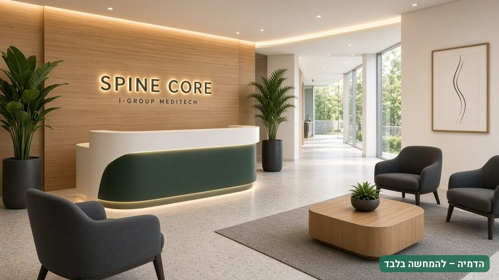
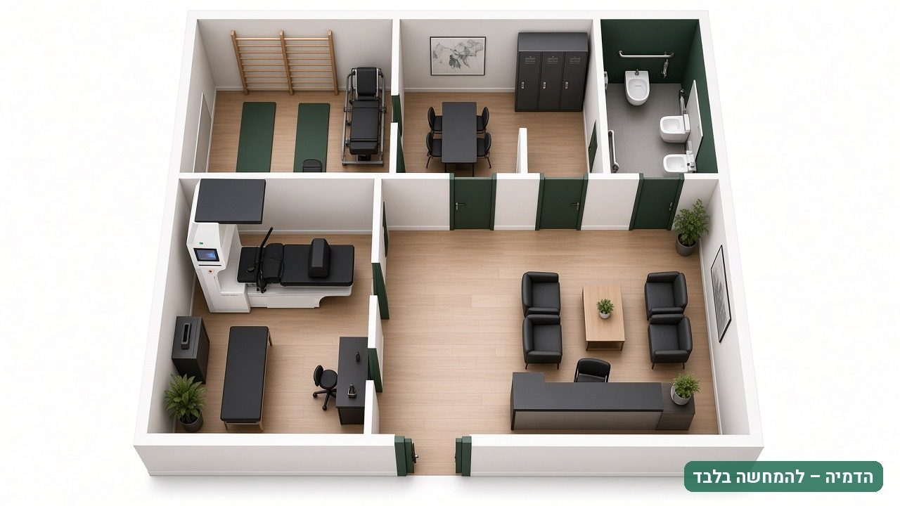
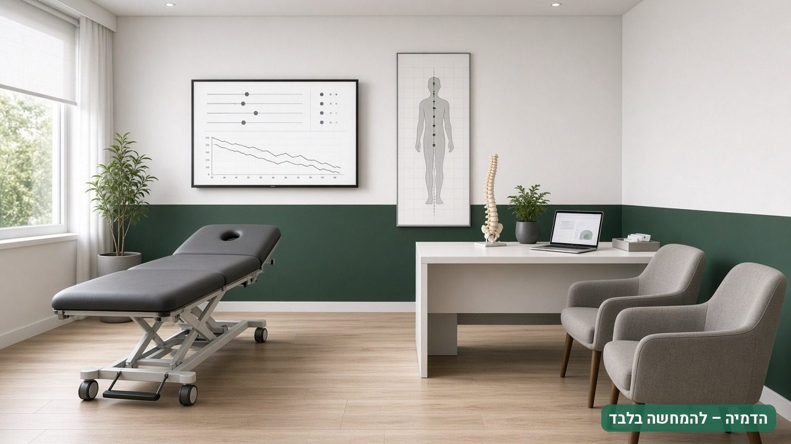
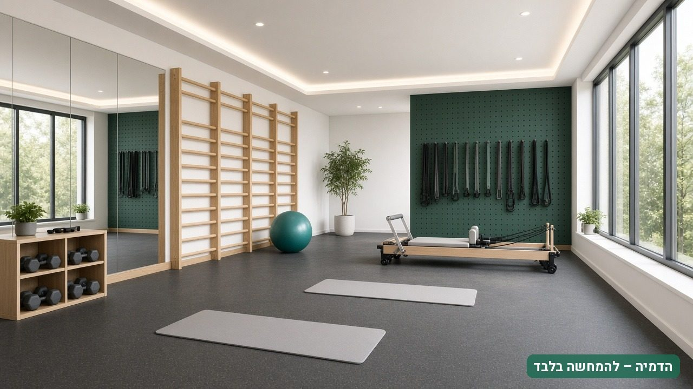
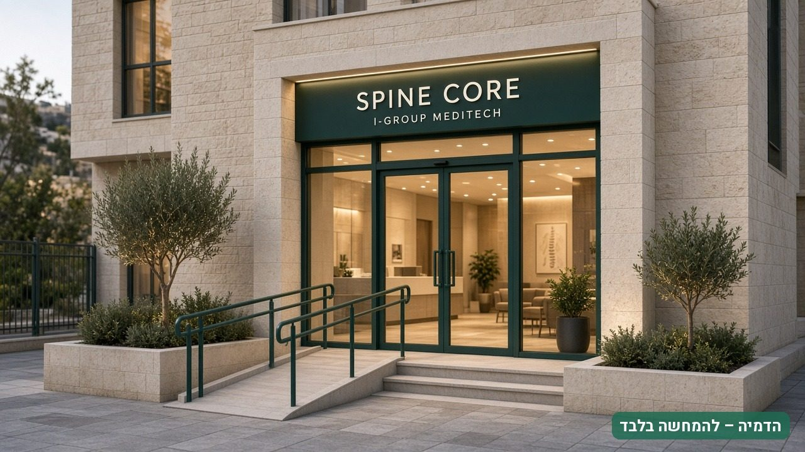

SPINE CORE
המרכז שלך לטיפול בכאבי גב ופריצות דיסק – מהחזון ועד היום הראשון
דמיין שאתה פותח את הדלת למרכז שלך: קבלה שקטה, חדר טיפול עם מערכת דקומפרסיה ממוחשבת, צוות מקצועי, ומטופלים שמגיעים בזכות תהליך ברור ומדיד. האוגדן הזה מראה איך זה נראה, כמה זה עולה, מה צריך כדי להגיע לשם, ומה הסיכונים, בלי להבטיח הבטחות.
כל המספרים הם תחזיות מהמודל הפיננסי, על בסיס הנחות מפורשות. אינם התחייבות להכנסה או לרווח.
כאב גב הוא הגורם המוביל בעולם לשנות חיים עם מוגבלות
מטופלים מחפשים מסלול ממוקד: הערכה מקצועית, הסבר ברור, תוכנית טיפול אישית ומעקב מדיד. מרכז שעוסק רק בעמוד השדרה בונה מוניטין, הפניות מרופאים וחוויית מטופל שקשה להשיג בקליניקה כללית.
חשוב לדעת
ממצא ב-MRI לבדו אינו מצדיק טיפול. בלטי דיסק שכיחים גם אצל אנשים ללא כאב (Brinjikji 2015), וההחלטה הטיפולית מתבססת על הערכה קלינית מלאה.
הדמיה – להמחשה בלבדSpine MT CORE – הלב הטכנולוגי של המרכז
SPINE CORE הוא השם המסחרי של איי גרופ מדיקלטק בע״מ לדגם Spine MT CORE של Shinhwa Medical (קוריאה). הפונקציות שלהלן מופיעות בעלון היצרן בלבד.
דקומפרסיה צווארית ומותנית
עם מערכת משוב
זווית מטרה 0–25°
בצוואר ובמותן
יישום חד-צדדי 0–20°
צוואר ומותן
רוטציה מותנית 0–18°
עצירה מתכווננת
מוביליזציה
חזה, מותן, עצה ואגן; 3 עוצמות × 5 דרגות זווית
מתגי חירום
למפעיל ולמטופל; מסך מפעיל ומסך מטופל
| נושא | מצב | סטטוס |
|---|---|---|
| רישום אמ״ר בישראל | מס׳ 404200001 | אומת על ידי הלקוח; תעודה, תוקף והתוויה – לצירוף |
| מחיר | 280,000 ₪ לפני מע״מ (330,400 ₪ כולל מע״מ 18%) | מחירון איי גרופ מדיקלטק בע״מ 2026; כולל התקנה, הדרכה קלינית ואחריות יצרן 24 חודשים |
| תקינה | ISO 13485:2016 לפי עלון היצרן | תעודה לצירוף; CE לא אומת |
| מידות, משקל, חשמל, טווחי כוח | לא מופיעים בעלון | חסר – מדריך משתמש |
| FDA | לא אותר רישום | אין להשתמש בטענה |
ראיות בגילוי נאות
Cochrane (2013) ו-NICE אינם תומכים בטרקציה ככלל לכאב גב. RCT קוריאני (Choi 2022) על דגם K-1 מאותה סדרה, לא CORE, ומטא-אנליזה של 16 מחקרים (Yuan 2024) מצאו שיפור בכאב ובתפקוד. לכן SPINE CORE היא רכיב בתוכנית שיקום פעילה. אין טענה לריפוי פריצת דיסק, להחזרת דיסק למקומו או למניעת ניתוח.בחר את רמת ההשקעה והליווי שמתאימה לך
START
למי: בעלי קליניקה קיימת ופיזיותרפיסטים
מה כלול (מוצע): מערכת SPINE CORE, התקנה, הדרכה קלינית, מסמכי בטיחות וחומרי הסברה בסיסיים
שטח בתרחיש: כ-50 מ״ר
PROFESSIONAL
למי: יזמים ופיזיותרפיסטים שמקימים מרכז חדש
מה כלול (מוצע): SPINE CORE ומערכות משלימות, ייעוץ תכנון, הדרכת צוות, תוכנית עסקית ושיווק השקה
שטח בתרחיש: כ-85 מ״ר
PREMIUM
למי: משקיעים וקבוצות רפואיות
מה כלול (מוצע): פתרון TURNKEY: ליווי מיקום ותכנון, ציוד מלא, CRM, תשתית שיווק, KPI וליווי בהרצה
שטח בתרחיש: כ-150 מ״ר
| רכיב | START | PROFESSIONAL | PREMIUM |
|---|---|---|---|
| מערכת SPINE CORE | כלול | כלול | כלול |
| מערכות משלימות | בתוספת תשלום | לפי חבילה | לפי חבילה |
| תכנון קליניקה | לא כלול | ראשוני | מקיף |
| תוכנית עסקית | בסיסית | מלאה | מותאמת אישית |
| תמיכה שיווקית | חומרי בסיס | חבילת השקה | מערך מורחב |
| ליווי עסקי | אופציונלי | מוגבל בזמן | מורחב |
הצעת מבנה מסחרית לבדיקה, שמחייבת רק לאחר אישור איי גרופ מדיקלטק בע״מ בכתב. PREMIUM אינו זיכיון, אינו רשת משותפת ואינו התחייבות לרווחיות. האחריות הקלינית נשארת בידי אנשי המקצוע המורשים של הקליניקה.
המספרים, לכל מסלול, בשלושה תרחישים
| מסלול | השקעה בהקמה (לפני מע״מ) | כולל מע״מ 18% | איזון (טיפולים ביום) | החזר – בסיסי | החזר – אופטימי | EBITDA שנה 2 – בסיסי |
|---|---|---|---|---|---|---|
| START | 291,000 ₪ | 343,380 ₪ | 5.6 | חודש 21 | חודש 14 | 326,923 ₪ |
| PROFESSIONAL | 481,000 ₪ | 567,580 ₪ | 6.2 | חודש 36 | חודש 19 | 243,362 ₪ |
| PREMIUM | 675,000 ₪ | 796,500 ₪ | 9.4 | מעל 36 ח׳ | חודש 32 | -47,755 ₪ |
EBITDA שנה 2 לפי תרחיש (₪)
מה המספרים אומרים, בכנות
START הוא המסלול הכלכלי ביותר ב-36 חודשים (החזר: חודש 21 בתרחיש הבסיסי). PROFESSIONAL מחזיר את ההשקעה סמוך לסוף התחזית בתרחיש הבסיסי (חודש 36). PREMIUM מחזיר השקעה רק בתרחיש האופטימי (חודש 32) ומומלץ רק אחרי אימות ביקוש. ההשקעה בהקמה (מחירים מעודכנים 11.11.2026) כוללת ציוד, ריהוט מקצועי (מיטות טיפול וערכת ציוד הערכה), מחשוב, מיתוג וקמפיין השקה בלבד – ללא שיפוץ, ריהוט כללי, אתר או הון חוזר. ביטוח וייעוץ (250 ₪ לחודש) נכללים בהוצאות השוטפות. תרחישים: שמרני 5/6/7, בסיסי 8/9/10, אופטימי 12/13/14 טיפולים ביום (שנים 1/2/3).שחק עם המספרים של המרכז שלך
חישוב פשטני במצב יציב, לפי הנחות המודל: הנחת סדרה 5%, שירותים משלימים לפי המסלול, מתכלים, סליקה 1.2%, שיווק (CPL 120 ₪, המרה 20%), 1.0 משרות פיזיותרפיה, שכירות, צוות ותחזוקה. לא כולל תקופת הרצה, פחת ומס, ואינו התחייבות. המודל המלא ל-36 חודשים נמצא בקובץ ה-Sheets.
פריסה לפי גודל
START · כ-50 מ״ר
קבלה קטנה וספסל המתנה, חדר SPINE CORE בעומק המבנה לשקט ופרטיות, חדר טיפול והערכה, ופינת תרגול ליד החלון.
PROFESSIONAL · כ-85 מ״ר
ציר מסדרון מרכזי: בחזית קבלה והמתנה, באמצע חדר הערכה וחדרי טיפול, בעומק חדר SPINE CORE ואזור תרגול.
PREMIUM · כ-150 מ״ר
שני אגפים: אגף קליני (הערכה, רופא, חדרי מכשור) ואגף שיקום (אולם תרגול וחדרי טיפול), עם עמדת קבלה מרכזית.
מסלול המטופל: קבלה, המתנה קצרה, הערכה, SPINE CORE, תרגול, ובחזרה לקבלה לתיאום. המסלול חד-כיווני ככל האפשר. הנגישות נבדקת מול יועץ נגישות ותקנות 2013.

הדמיה – להמחשה בלבד
הדמיה – להמחשה בלבד
הדמיה – להמחשה בלבדמהקליק הראשון ועד סיכום הטיפול
דגלים אדומים
חשד לתסמונת זנב הסוס, חסר נוירולוגי מתקדם או חשד לפתולוגיה חמורה מחייבים הפניה רפואית דחופה, לפני כל טיפול.מנוע גיוס מטופלים
הפניות מרופאים
רופאי משפחה, אורתופדים ומרפאות כאב. מכתב סיכום לרופא המפנה, בהסכמת המטופל, בונה אמון והפניות חוזרות.
דיגיטל ממוקד כוונה
Google Ads על חיפושים כמו "פיזיותרפיה לפריצת דיסק", קהלים מקומיים ברשתות ודפי נחיתה ייעודיים. הנחת תכנון: 120 ₪ לליד והמרה של 20%.
תהליך מכירה מדיד
מענה תוך 15 דקות, תסריטי שיחה, תזכורות וואטסאפ ודוח KPI שבועי: לידים, קביעה, הגעה ומדדי תוצאה.
כל פרסום כפוף לחוק הסדרת העיסוק במקצועות הבריאות ולחוק הגנת הצרכן: בלי הבטחות ריפוי, בלי "מניעת ניתוח" ובלי עדויות מטעות.
מהחלטה לפתיחה ב-90 יום
ימים 1–30 · תכנון
- יעדים, מסלול ותקציב
- בדיקת היתכנות מקומית
- איתור נכס וחוזה
- רגולציה: אמ״ר, ביטוח, פרטיות
- הזמנת ציוד ומפרט התקנה
ימים 31–60 · הקמה
- מיתוג ושילוט
- גיוס צוות
- התאמות בנכס אם נדרשות
- CRM ותוכנת ניהול
- אספקה והתקנה של SPINE CORE
ימים 61–90 · הרצה
- הדרכת הפעלה ובטיחות
- קמפיינים ופרופיל עסק
- הרצה רכה
- פתיחה וערב רופאים
- בקרת KPI שבועית
שירות לאחר המכירה – רמות מוצעות
| רכיב | BASIC | PLUS | PREMIUM |
|---|---|---|---|
| תכולה | אחריות יצרן ותמיכה טלפונית | ביקור תחזוקה מונעת והדרכת רענון בשנה | 2 ביקורים מונעים, עדיפות בחלקים, דוח זמינות |
| מענה ראשוני (מוצע) | יום עסקים | 4 שעות פעילות | 2 שעות פעילות |
| הגעת טכנאי (מוצע) | עד 5 ימי עסקים | עד 72 שעות | עד 48 שעות |
| תמחור | כלול באחריות (24 חודשים ל-CORE) | מחיר להזנה | מחיר להזנה |
זמני השירות מחייבים רק לאחר אישור איי גרופ מדיקלטק בע״מ בהסכם.
מה יכול להשתבש – ואיך מנהלים את זה
| סיכון | התמודדות |
|---|---|
| ביקוש נמוך מהצפוי | בדיקת היתכנות מקומית, START לפני הרחבה ומעקב CPL שבועי |
| עלות שיווק גבוהה | הפניות מרופאים, תוכן אורגני וביקורות בהסכמה |
| תלות במטפל אחד | הכשרת מפעיל נוסף ונהלים כתובים |
| ציפיות לא מציאותיות של מטופלים | הסבר כתוב, הסכמה מדעת, יעדים תפקודיים ואיסור הבטחות |
| תקלות ציוד | הסכם שירות ותחזוקה מונעת; אחריות יצרן 24 חודשים |
| תזרים בתקופת ההרצה | ההשקעה אינה כוללת הון חוזר – לשמור מזומנים להרצה מחוץ להשקעה |
| PREMIUM מחזיר השקעה רק בתרחיש האופטימי | רק אחרי אימות ביקוש גבוה |
בוא נבדוק יחד אם SPINE CORE מתאים לך
SPINE CORE היא לא רק מערכת טיפול, אלא בסיס להקמת מרכז מקצועי שמתמחה בבעיות עמוד השדרה. בפגישת בדיקת היתכנות נבחן יחד את המיקום, קהל היעד, השטח, כוח האדם והמסלול המתאים לך, ונתאים את המודל הפיננסי לנתונים שלך.

הדמיה – להמחשה בלבד